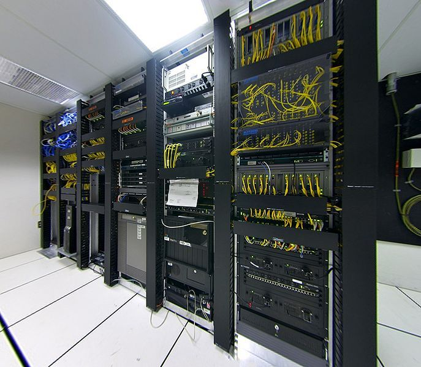
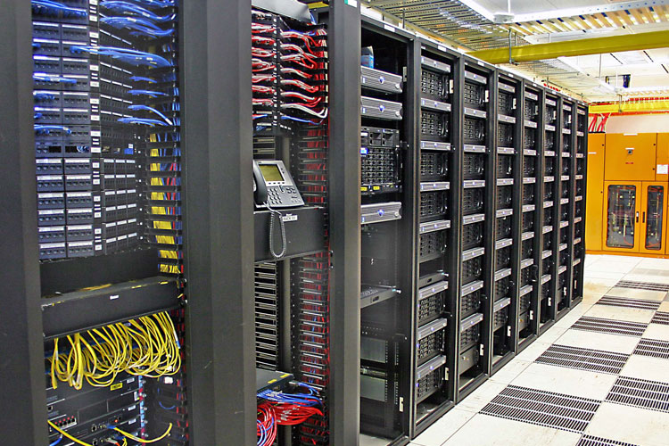

Proyectos:
-
Migración de servidores HP:
Se llevo a cabo una migración de servidores HP que tenian una versión de windows server desactualizada. Esta migración se hizo fuera de horario en una ventana de mantenimiento porque afectaba la producción.
 -
Se instaló equipamiento para la empresa Realtek que necesitaba tener interconexión con todo el edificio.

Servicios:
-
Asesoramiento de venta de equipamiento:
Nos dedicamos a asesorar a nuestros clientes que necesitan implementar una red de datos o telefonia. Contamos con una gama amplia de proveedores con certificación y confiabilidad
-
Instalacion de equipamiento:
Contamos con un equipo de técnicos que se encargan tanto del cableado como la configuración del equipamiento en sitio o de forma remota
-
Configuracion de equipos:
Tenemos un equipo de ingenieros que cuenta con el conocimiento y la certificación para migrar o instalar el sitio que deseen los clientes
-
Servicio post instalación:
Oferecemos un soporte post instalación que le da la tranquilidad al cliente que va a estar cubierto ante cualquier eventualidad